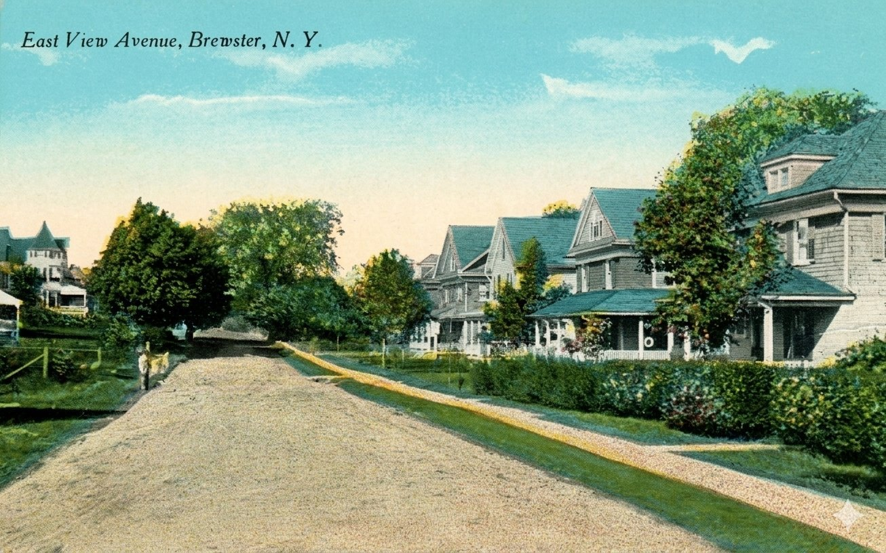
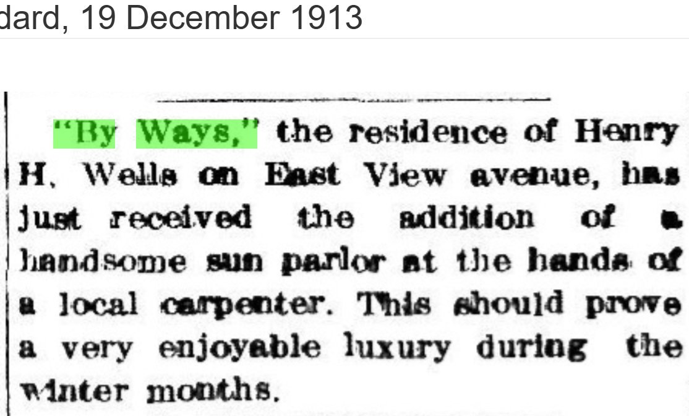
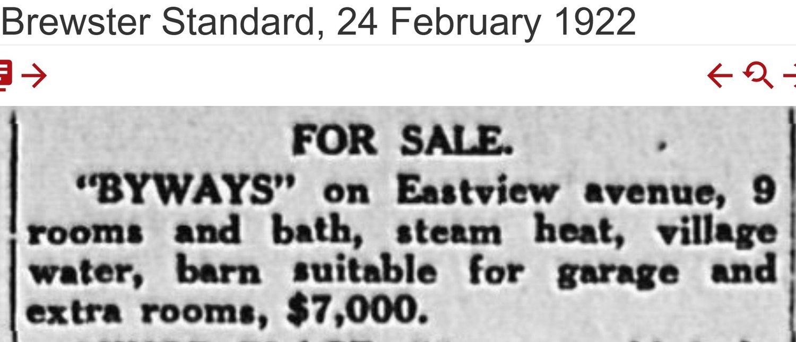
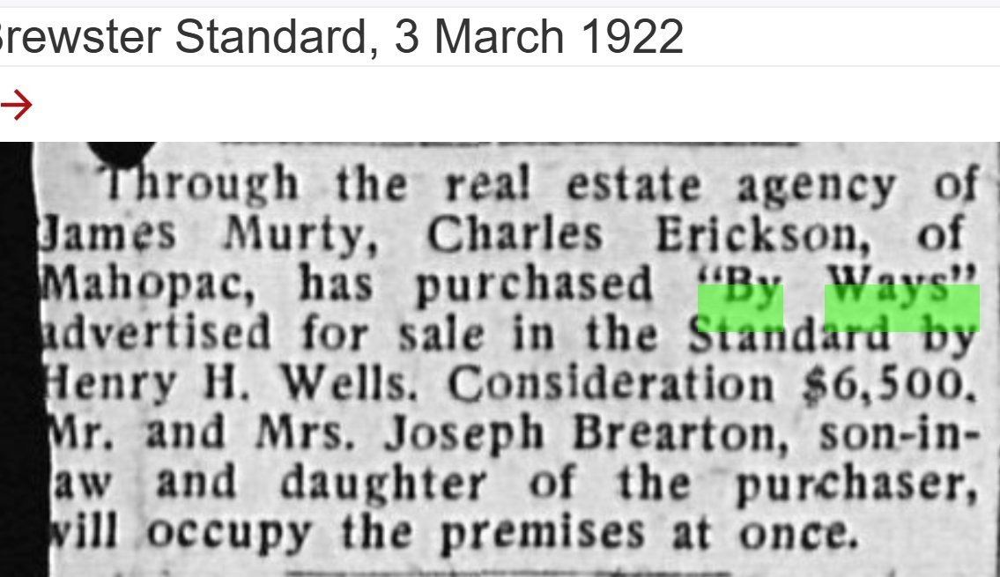
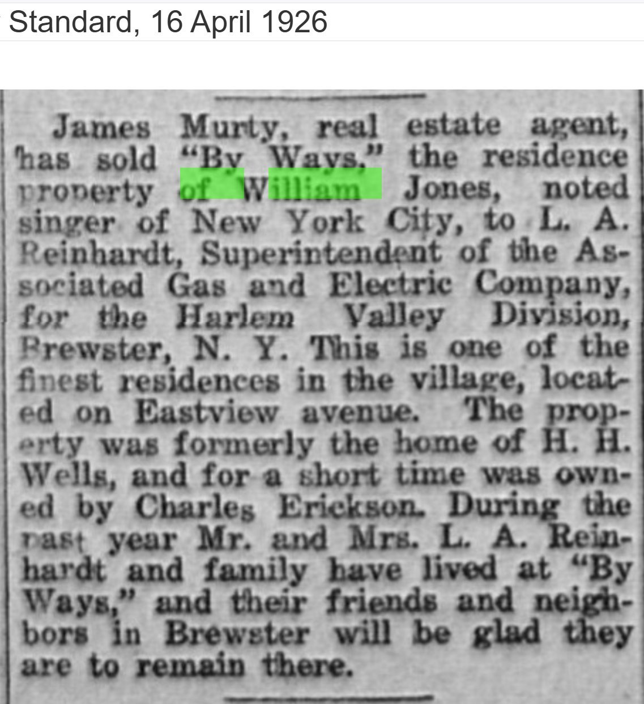
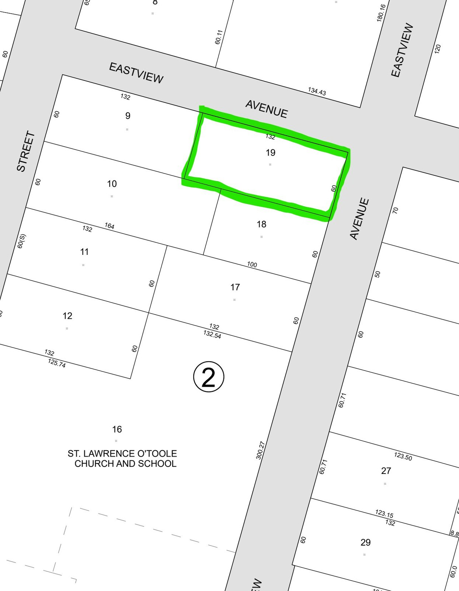
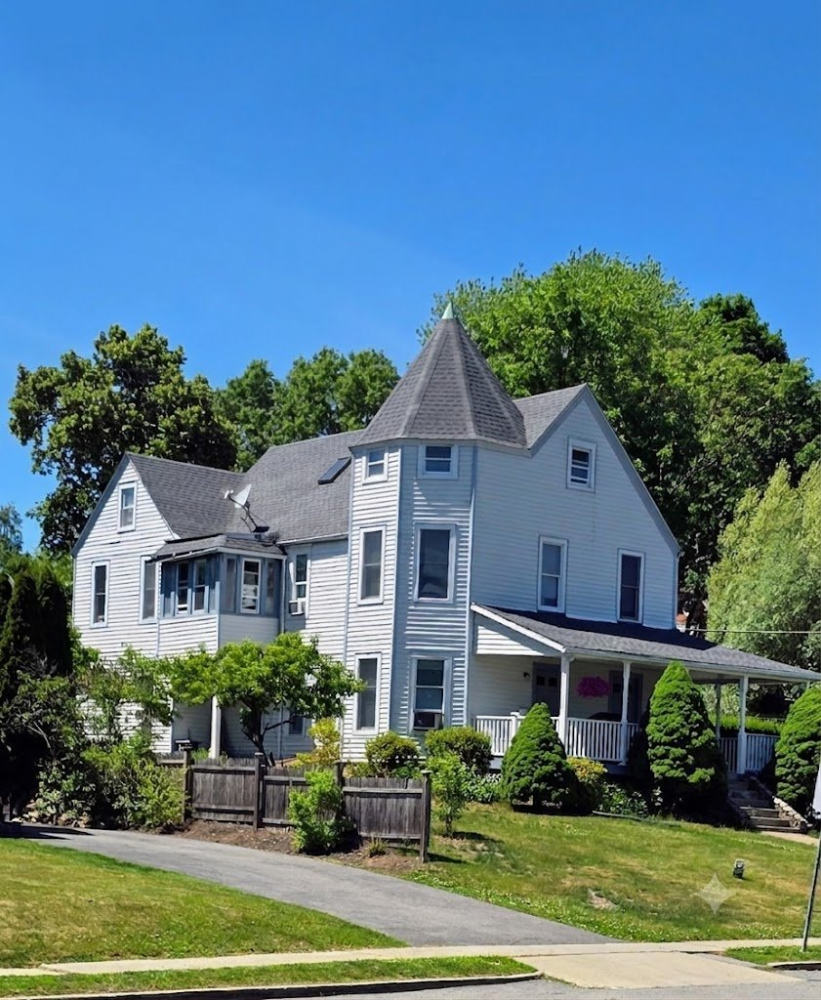

The House Called “By Ways”
Henry H. Wells’s Eastview Avenue home — its sun parlor, its $7,000 listing, and its passage through four owners in four years — with a brief life of the family that gave Brewster its bank, its newspaper, and “Mr. Brewster” himself.
I. At a glance
“By Ways” was the Eastview Avenue residence of Henry H. Wells — the man who would become, in a centennial headline a half-century later, “Mr. Brewster.” The house carries a proper name in every clipping, the period habit of christening a fine home rather than numbering it, and it appears in the record across a tight thirteen-year window: present by the 1910 Sanborn map, given a sun parlor in 1913, listed for sale in 1922, and then sold, resold, and sold again until 1926.

What makes the property worth a piece of its own is that compression. In the four years from 1922 to 1926 “By Ways” passed through four hands — Henry H. Wells, then Charles Erickson of Mahopac, then a New York City singer named William Jones, then L. A. Reinhardt of the Associated Gas & Electric Company — each transfer reported in the Brewster Standard. The house is also a doorway into the Wells family, whose three generations sit behind a striking share of the village’s institutions and behind the development of Eastview Avenue itself.
One caution belongs at the top. The clippings place the house on “Eastview avenue” (and, in 1913, “East View avenue”) but never give a street number. The address “19 Eastview” that appears in the earlier project narrative, and the candidate tax parcel Lot 19, are not the same kind of fact — one is a street address, the other a tax-map lot number that happens to share the digits. Tying the house to a specific surviving parcel is the work of Section V, and it is not yet finished.
II. The Wells family — bank, newspaper, and “Mr. Brewster”
The Wells story in Brewster begins with Major Frank Wells (1841–1919). Born in Litchfield, Connecticut, he served as a captain in the 13th Connecticut Volunteers — Irish Bend, Port Hudson, and the Shenandoah Valley under Sheridan — and arrived in Brewster about 1869 as bookkeeper for Gail Borden’s milk condensery. From that post he rose into the institution that would define the family: he co-founded the village’s First National Bank (organized as Borden, Wells & Co.), serving as cashier and later president. He also published the Brewster Standard for a period, commanded the Crosby Post of the Grand Army of the Republic, and gave land for civic use. With his wife, Caroline Crosby — of the prominent local Crosby family — he raised a family that included Henry.
Frank Wells is, just as importantly, the figure behind the physical Eastview Avenue. Between 1903 and 1913 he consolidated the open land at the village’s eastern edge, and in 1911 he conveyed lots to the builder William M. Smalley, from which Smalley raised the “sister houses” at 14 and 16 Eastview. The same developer-and-builder partnership repeated on nearby Crosby Avenue. So when “By Ways” appears on Eastview by 1910, it appears on a street the Wells family was actively making.
The family seat was not “By Ways” but the “Casino” — the “Wells Casino,” an earlier entertainment building (ballroom, card rooms, bowling alley) put up by Samuel Church and, after Frank Wells’s death in 1919, remodeled into the Wells home on the Prospect Street height above the village. “By Ways” and the “Casino” are distinct properties, and the period record keeps them distinct; the most economical reading of the timing — Henry at “By Ways” by 1913, the Casino becoming the family home after 1919, “By Ways” sold in 1922 — is that Henry moved up to the larger family house and let the Eastview house go. That sequence is a reasonable inference from the dates, not a documented fact.
Henry Hubbard Wells (1877–1978) was born in the village the year Brewster was hitting its industrial stride, and he became its most durable public figure. He served as mayor (1935–1947) and as the local Selective Service director for more than a quarter-century (1941–1967), famously seeing troops off from the railroad station. His 1977 centennial profile in the Standard, “Brewster’s 100 Years With Harry,” threaded his own life through the village’s — and the Brewster middle school still carries his name. The standard published county histories that this project leans on — Blake (1849), Pelletreau (1886), Haight (1912) — mostly predate Henry’s public life; the Wells material in them would belong chiefly to Frank, and pulling those passages is a clean next step rather than something this draft asserts on faith.
III. The house: a sun parlor and a $7,000 listing
The first dated glimpse of the house as the Wells home is a small society note from the winter of 1913 — a carpenter’s improvement worth a paragraph in the Standard:
“By Ways,” the residence of Henry H. Wells on East View avenue, has just received the addition of a handsome sun parlor at the hands of a local carpenter. This should prove a very enjoyable luxury during the winter months.
— Brewster Standard, December 19, 1913

Nine years later the house is described far more fully — in its own for-sale advertisement. It gives the only physical inventory of “By Ways” in the record: nine rooms and a bath, steam heat, village water, and a barn “suitable for garage and extra rooms,” offered at $7,000. That is the profile of a substantial, fully modern home for the early 1920s — central heat and municipal water were not universal — and the barn-to-garage line catches the exact moment the automobile was displacing the horse.

IV. Four owners in four years, 1922–1926
Within days of the listing, the house was sold. On March 3, 1922 the Standard reported that Charles Erickson of Mahopac had bought “By Ways” through the real-estate agent James Murty, for a consideration of $6,500 — five hundred dollars under the asking price — and that Erickson’s daughter and son-in-law, Mr. and Mrs. Joseph Brearton, would “occupy the premises at once.” Title and occupancy already part company here: Erickson bought, the Breartons lived in it.

Erickson held the house only briefly. By the time it changed hands again — reported April 16, 1926 — the owner of record was no longer Erickson but William Jones, described as a “noted singer of New York City,” and the buyer was L. A. Reinhardt, superintendent of the Associated Gas & Electric Company for its Harlem Valley Division. The same item supplies, in one sentence, the chain it had been building all along:
James Murty, real estate agent, has sold “By Ways,” the residence property of William Jones, noted singer of New York City, to L. A. Reinhardt… The property was formerly the home of H. H. Wells, and for a short time was owned by Charles Erickson. During the past year Mr. and Mrs. L. A. Reinhardt and family have lived at “By Ways.”
— Brewster Standard, April 16, 1926

So the reported sequence is Wells → Erickson (March 1922) → Jones → Reinhardt (1926) — with the Reinhardts occupying the house roughly a year before they bought it. This corrects the earlier project narrative, which carried the house straight from Erickson to Reinhardt and left William Jones out entirely. It is worth stating plainly what kind of evidence this is: these are newspaper accounts of ownership and occupancy, valuable and contemporary but not the same as a reviewed deed. The chain is firm enough to publish as a reported chain; promoting it to a documented one means pulling the conveyances, which have not yet been examined.
V. The parcel — a candidate, not yet confirmed
To carry “By Ways” forward to a surviving lot, we start from a modern Village of Brewster property-record card. It describes a parcel in the Town of Southeast assessment — Map 5 / Block 3 / Lot 2, carried today as tax 67.26‑2‑19 — measuring 60 × 132 feet, with an assessed lot value of $1,500 and a building value of $5,500. On the modern tax map this is the corner lot at the Eastview Avenue frontage, in the same block that holds St. Lawrence O’Toole church and school to the south — which would place “By Ways” at the head of the block whose far end the parish reshaped (the subject of the Ganong and Morehouse pieces).

The card’s ownership column, however, only reaches back to the mid-twentieth century. Its earliest entry is Kenneth & Helen Griffen at Liber 466/337, followed by Helen & Gilmer Griffin (658/25), Louise Dakes (658/27), “Vante & Hobbeland” (716/978, 1974), Stephen Braun (792/61, 1983), Thomas J. & Susan L. Rogers (1005/170, 1988), and Galo & Rosa Benavides (1481/237, 1999), plus a later utility easement (1817/12). The $16.50 in revenue stamps on the Griffen deed implies a sale price of about $15,000 at the period rate of $1.10 per $1,000 — the same documentary-stamp arithmetic used in the Ganong piece.
Two cautions keep this at “candidate.” First, the gap: the Wells–Erickson–Jones–Reinhardt era (1913–1926) sits about thirty years before the card’s first owner, and not one of the intervening deeds has been pulled. Until the deed into the Griffens (Liber 466/337) is read — and ideally a Reinhardt-era conveyance that names “By Ways” or recites the Wells chain — the link between this lot and the house in the clippings is geography and inference, not title.
Second, and more pointed: the name Griffen at the head of this card should stop us. The 1959 Ganong house move sent that gambrel dwelling, per the Standard, to “the plot of the Griffin property… on Eastview Ave.” If the Griffen/Griffin holdings touched this corner, then a real question follows: is the building now standing on this lot the original Wells “By Ways,” or could it be the relocated Ganong house (which would mean the Wells house is gone)? Nothing in the deed record yet answers that — the destination of the 1959 move is itself unresolved in the Ganong piece — and until Liber 466/337 is read, the present house cannot be labeled “By Ways” without qualification. It is exactly the kind of coincidence that the occupancy-is-not-title rule exists to catch.
One piece of evidence does push against the relocation alternative, though it does not close it. The house standing on the candidate corner today is a Queen Anne — a round corner tower under a conical roof, a wraparound porch, cross-gabled roofs — the form of a house built around the turn of the century, and a plausible match for the turreted house at the left of the period postcard above. The Ganong dwelling that was moved in 1959 is described in the Standard as a gambrel house; this is not that. There is also, at the left of the present house, a one-story glassed addition consistent with the “sun parlor” the Standard reported Wells adding in 1913. Both observations are suggestive, not probative — they rest on architecture and a photograph, not on a deed — and the photograph below has been digitally enhanced, so the tower-and-porch reading should be checked against an unprocessed image before it is leaned on.

The deed chain for the lot. The card’s history begins at Kenneth & Helen Griffen (Liber 466/337). The deed into the Griffens, and the conveyances bridging back to Reinhardt’s 1926 purchase, are unpulled. These are the documents that would either confirm Map 5/Block 3/Lot 2 as “By Ways” or break the identification.
The 1926 sale and the Wells acquisition. The Jones→Reinhardt deed (recorded c. 1925–26) would fix Reinhardt’s title and may recite the Erickson and Wells chain; the deed by which Henry H. Wells (or Frank Wells) first took the lot would date the house against its 1910 Sanborn appearance — was it bought built, or built by the Wellses on consolidated land?
The address vs. the lot number. “19 Eastview” (a street address used in the earlier narrative) and tax Lot 19 are independent facts that share a digit. A period directory, a Sanborn with house numbers, or the deed metes-and-bounds are needed to fix the true street number of “By Ways.”
The Griffen/Ganong question. Resolve whether the Griffen holdings at this corner are the same “Griffin property” that received the 1959 Ganong house, and therefore whether the present building is the Wells house or the moved Ganong house. Pulling Liber 466/337 and reconciling it with the Ganong-move destination is the single highest-value next step.
A confirmed image of the house. Two images now stand with this piece: a period “East View Avenue” postcard, on which the house at left is identified as “By Ways,” and a modern photograph of the Queen Anne on the candidate corner. Both identifications rest on local knowledge and architecture rather than on a document; what remains open is a caption-grade tie — a deed, a numbered Sanborn, or a labeled photograph — that fixes either image to the parcel. The postcard supplied here is also an AI-enhanced copy; the original New York Heritage scan (item pchc:471), or the master held by the Putnam County Historian’s Office, should replace it for publication.
William Jones, the singer. A “noted singer of New York City” who owned a Brewster house c. 1922–1926 should be identifiable; the identification would add color and a check on the 1926 report.
Sources Consulted
- December 19, 1913 — “By Ways,” residence of Henry H. Wells on East View avenue, receives a sun-parlor addition by a local carpenter. The earliest dated tie of the name to the Wells household.
- February 24, 1922 — for-sale advertisement: “BYWAYS” on Eastview avenue, 9 rooms and bath, steam heat, village water, barn suitable for garage and extra rooms, $7,000. The only physical description of the house.
- March 3, 1922 — Charles Erickson of Mahopac buys “By Ways” (advertised by Henry H. Wells) through agent James Murty for $6,500; Mr. and Mrs. Joseph Brearton, the purchaser’s daughter and son-in-law, to occupy at once.
- April 16, 1926 — James Murty sells “By Ways,” then the property of William Jones, “noted singer of New York City,” to L. A. Reinhardt of the Associated Gas & Electric Co. (Harlem Valley Division); recites the prior Wells and Erickson ownership and a year of Reinhardt occupancy.
- Village of Brewster property-record card, Town of Southeast assessment — Map 5 / Block 3 / Lot 2 (tax 67.26‑2‑19), 60 × 132; ownership list Griffen (466/337) → Griffin/Gilmer (658/25) → Dakes (658/27) → Vante & Hobbeland (716/978) → Braun (792/61) → Rogers (1005/170) → Benavides (1481/237), plus utility easement (1817/12). The candidate parcel; its chain does not yet reach the Wells era.
- Modern Putnam County tax map — Lot 19, the corner lot fronting Eastview Avenue in the St. Lawrence O’Toole block.
- Sanborn fire-insurance map, Brewster — 1910, on which “By Ways” is reported (in the earlier project narrative) to first appear. Cited here as project material pending a first-hand reading against the Sanborn collection.
- Major Frank Wells (1841–1919) and Henry H. Wells (1877–1978): drawn from the existing Eastview project narrative and the obituary/centennial material it rests on (“Brewster’s 100 Years With Harry,” 1977). The published county histories — Blake 1849, Pelletreau 1886, Haight 1912 — have not yet been searched for Wells passages; this is noted, not assumed.
- “East View Avenue, Brewster, N.Y.” — early-twentieth-century color picture postcard, New York Heritage Digital Collections (Putnam County Historian’s Office), item pchc:471. The copy reproduced here is an AI-assisted digitally enhanced version; the original web scan and the higher-resolution master (Historian’s Office) are the authoritative artifacts and should replace it for publication.
- Modern photograph of the Queen Anne house on the candidate corner — digitally enhanced; photographer credit to be confirmed. Shown as the present building on the candidate parcel, not as a deed-verified identification of “By Ways.”
- St. Lawrence O’Toole (hub) · The Ganong House Move · The Morehouse Factory · The Gilroy House
- Major Frank Wells and William M. Smalley — the land-consolidator and builder behind the “sister houses” at 14 and 16 Eastview, the residential development context for “By Ways.”
- The 1922–1926 ownership chain is established from contemporary newspaper reports; occupancy and title are tracked separately (the Breartons and then the Reinhardts occupied as others held title). The identification of the modern parcel as “By Ways” is a working hypothesis supported by block position and frontage, not by a continuous deed chain, and the Griffen/Ganong coincidence is treated as a caution rather than a connection. See the project methodology.
Research by Rob G. · Eastview Avenue Series